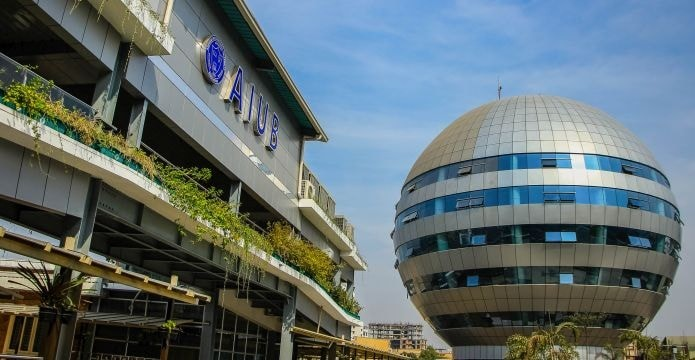

BSc. in Computer Science and Engineering
As a Computer Science and Engineering student at AIUB, I’ve had an inspiring experience on its vibrant campus. The supportive environment motivates me to explore new technologies, work on real-world projects, and collaborate with skilled peers, helping me grow both personally and professionally.
To build a successful career in Computer Science and Engineering by working with commitment and integrity, while applying and improving my skills. I am eager to take on challenging projects that encourage learning and innovation. Punctual and dedicated, I aim to contribute effectively to my team and achieve meaningful results for both my growth and the organization. Additionally, I am open to part-time opportunities that allow me to gain practical experience and further develop my professional skills